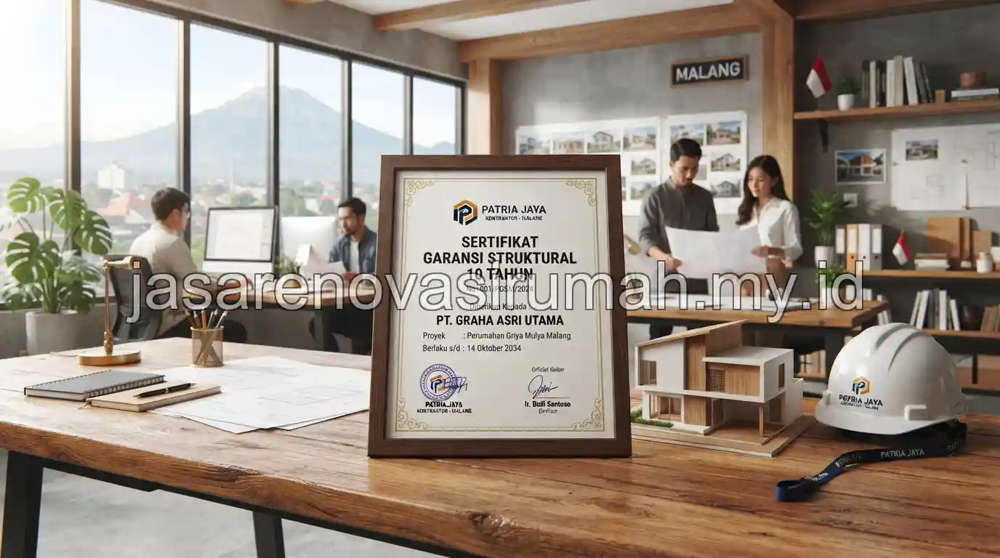

Jasa renovasi rumah Malang yang terpercaya menawarkan RAB tertulis sejak awal, survey lokasi langsung, dan garansi struktur resmi selama 3 bulan setelah serah terima, sehingga pemilik rumah tidak perlu khawatir soal biaya tersembunyi maupun kualitas pengerjaan.
Kebutuhan renovasi di Malang cukup beragam, mulai dari rumah tipe kecil di kawasan padat hingga rumah kluster yang butuh penyesuaian tata ruang untuk keluarga yang berkembang.
Apa Saja Tanda Jasa Renovasi Rumah Malang yang Terpercaya dan Bergaransi?
Jasa renovasi terpercaya di Malang biasanya memiliki legalitas usaha jelas, portofolio proyek nyata di kawasan sekitar, serta mencantumkan garansi struktur secara tertulis dalam kontrak kerja.
Beberapa indikator yang bisa dicek sebelum menunjuk kontraktor renovasi di Malang:
- Memiliki badan usaha resmi dengan dokumentasi proyek sebelumnya di kawasan Malang Raya.
- Bersedia melakukan survey lokasi langsung sebelum memberikan penawaran harga tertulis.
- Mencantumkan garansi struktur, umumnya sekitar 3 bulan, untuk pekerjaan seperti dinding, atap, dan pondasi.
- Menyediakan RAB rinci yang memisahkan biaya material, upah, dan biaya tak terduga.
Garansi 3 bulan ini penting karena beberapa masalah struktural, seperti retak dinding akibat penurunan tanah ringan, baru terlihat setelah bangunan digunakan beberapa waktu, sehingga masa garansi memberi jaminan tambahan bagi pemilik rumah.
Bagaimana Studi Kasus Renovasi Rumah Tipe 36 di Kawasan Lowokwaru?
Rumah tipe 36 di kawasan Lowokwaru umumnya direnovasi dengan fokus menambah ruang fungsional di lahan belakang yang masih tersisa, tanpa mengubah struktur utama bangunan depan yang sudah kokoh.
Pada studi kasus renovasi tipe 36 di Lowokwaru, pekerjaan biasanya mencakup penambahan dapur atau kamar mandi di area belakang, penguatan atap dengan rangka baja ringan, serta penataan ulang sirkulasi udara agar ruang tambahan tidak terasa pengap.
Kondisi lahan yang terbatas pada rumah tipe ini membuat perencanaan tata ruang menjadi krusial, karena setiap meter persegi perlu dimanfaatkan secara maksimal tanpa mengorbankan kenyamanan sirkulasi.
Bagi pemilik rumah tipe kecil serupa yang ingin memaksimalkan sisa lahan, pendekatan yang diterapkan pada studi kasus ini juga relevan diterapkan pada renovasi rumah subsidi di Malang, mengingat keduanya sama-sama menghadapi keterbatasan luas lahan belakang.
Apa Cakupan Garansi Struktur yang Biasa Diberikan Kontraktor Renovasi?
Garansi struktur yang umum diberikan mencakup kerusakan pada pekerjaan dinding, atap, dan pondasi akibat kesalahan konstruksi, bukan kerusakan akibat faktor eksternal seperti bencana alam atau kelalaian penghuni.

Sebelum menyepakati kontrak, pemilik rumah sebaiknya memastikan cakupan garansi secara tertulis, termasuk durasi, jenis kerusakan yang ditanggung, serta prosedur klaim jika ditemukan masalah setelah pekerjaan selesai.
Kejelasan ini penting agar tidak terjadi perbedaan interpretasi antara pemilik rumah dan kontraktor di kemudian hari.
Untuk gambaran anggaran secara menyeluruh sebelum memutuskan skala renovasi, Anda bisa mempelajari cara menghitung estimasi biaya renovasi rumah Malang sebagai acuan awal, atau jika kebutuhan spesifik ada pada kamar mandi, simak juga panduan biaya renovasi kamar mandi Malang untuk estimasi yang lebih rinci.
Kesalahan Umum Saat Memilih Jasa Renovasi Rumah di Malang
Kesalahan yang paling sering terjadi adalah memilih kontraktor hanya berdasarkan harga termurah tanpa mengecek portofolio dan legalitas usaha secara langsung.
Kesalahan lain yang perlu dihindari:
- Tidak meminta kontrak kerja tertulis yang mencantumkan cakupan garansi secara jelas.
- Melewatkan tahap survey lokasi sehingga estimasi biaya kurang akurat dengan kondisi riil.
- Mengubah desain di tengah pengerjaan tanpa menghitung ulang dampaknya pada RAB.
Pada akhirnya, memilih jasa renovasi rumah Malang yang tepat berarti memastikan RAB transparan, legalitas jelas, dan garansi struktur tertulis sejak awal kontrak.
Tim kami siap membantu mulai dari konsultasi awal, survey lokasi gratis, hingga serah terima proyek dengan garansi resmi 3 bulan.

Ainur Reza
Penulis Profesional & Praktisi Konstruksi
Ainur Reza adalah seorang penulis profesional yang memiliki ketertarikan mendalam pada dunia arsitektur dan konstruksi. Dengan pengalaman bertahun-tahun mengamati tren renovasi rumah, ia aktif membagikan panduan praktis, tips RAB, dan wawasan seputar material bangunan untuk membantu pemilik rumah mewujudkan hunian impian mereka dengan anggaran yang efisien.